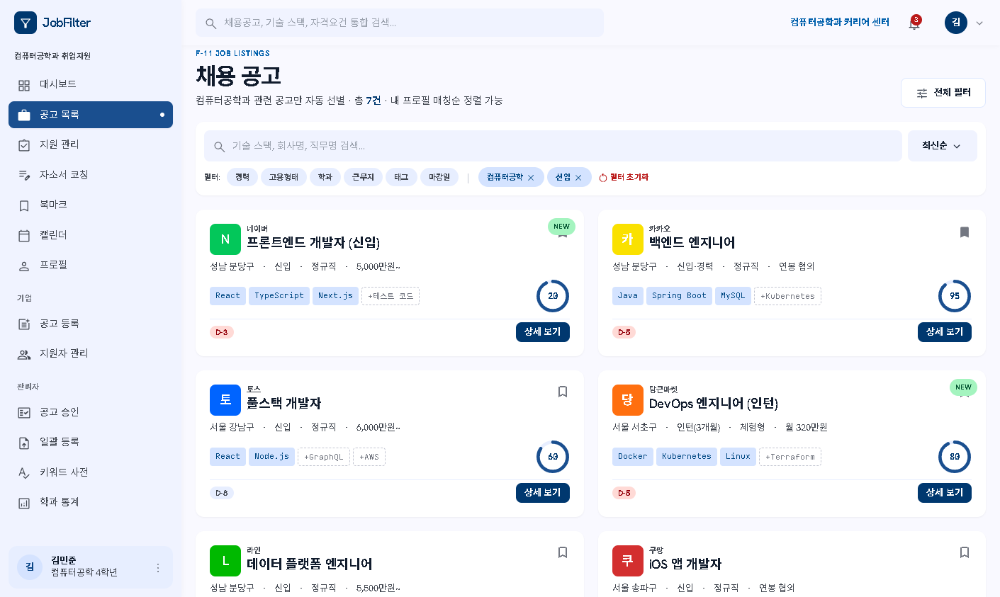
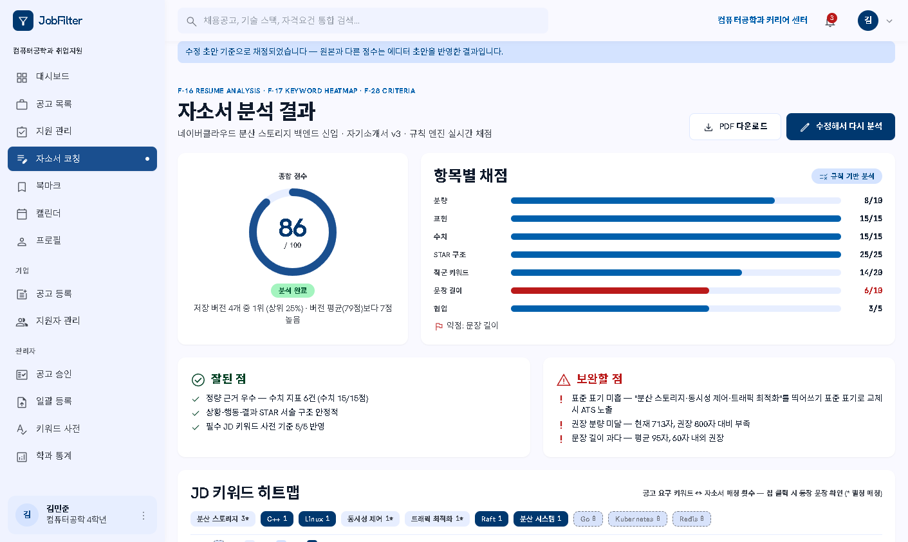
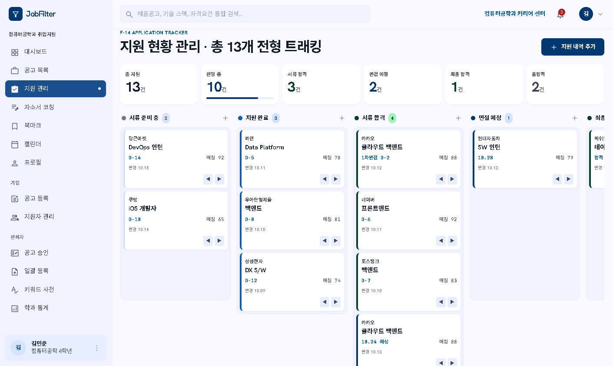
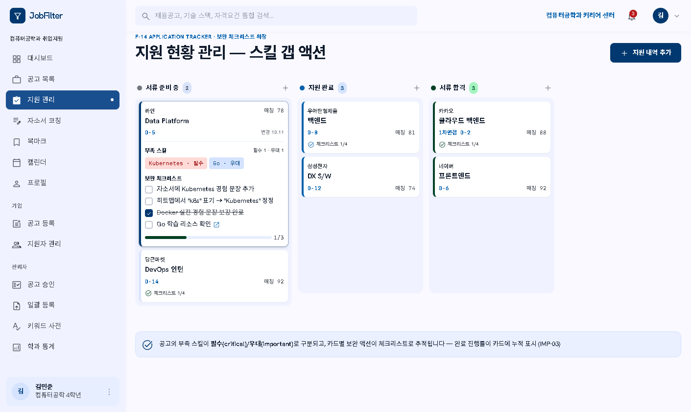
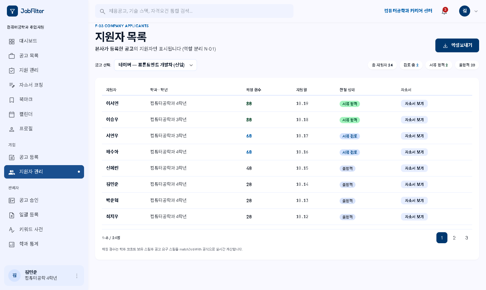
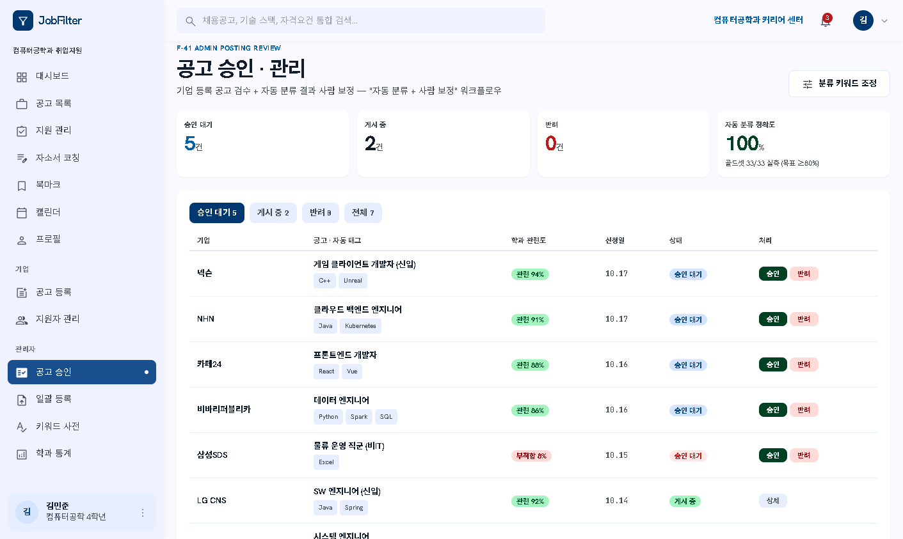
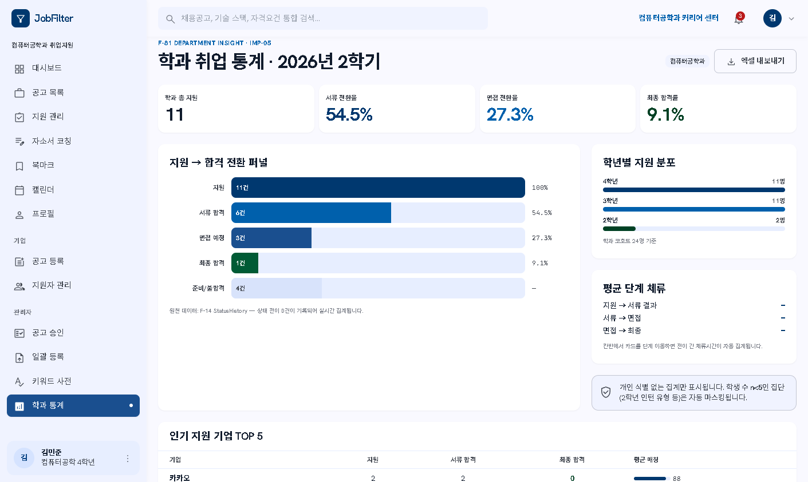
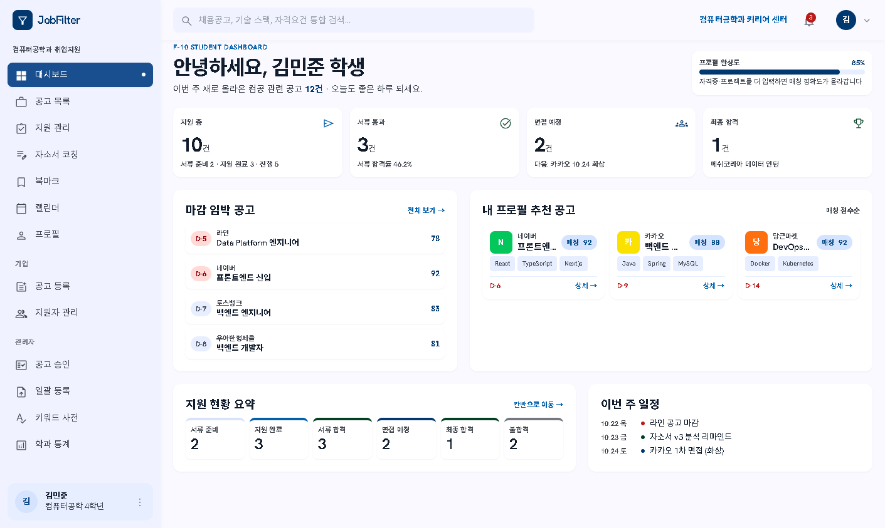

이 파일의 Figma 화면은 디자인 시안입니다. 아래는 그 시안을 토대로 만든 실제 동작 데모(figmasrc.vercel.app)에서 무엇이 어떻게 바뀌었는지에 대한 기록입니다 · 2026-10-29 · 배포본 af6acd8
시안에 박혀 있던 점수(92·88·84…)와 통계(84건·86%)를 전부 제거하고, 실제 매칭 엔진(matchJob)과 규칙 채점기(scoreResume)가 매번 계산한 값으로 표시합니다.
북마크·칸반 이동·체크리스트·자소서 초안·승인 처리가 전부 localStorage에 영속됩니다. 페이지를 이동하거나 새로고침해도 상태가 유지됩니다.
브라우저 데모는 Next.js 구현체(jobfilter-web)의 로직을 그대로 포팅한 것 — 같은 프로필·같은 공고면 어디서든 같은 점수가 나옵니다. 실서비스 구현은 로컬 시연으로 확인할 수 있습니다.
| 화면 | Figma 시안 (정적) | 배포 데모 (동작) |
|---|---|---|
| s10 대시보드 | KPI 숫자 고정, 프로필 게이지 장식 | 칸반 상태에서 지원 중·면접 건수 계산, 프로필 완성도를 보유 스킬 수로 산출 |
| s11 공고 목록 | 점수 92/88/84 고정, "총 47건" | matchJob 실측 점수(카카오 95·당근 80·토스 60·나머지 20), 검색 필터, 건수 동적 동기화 |
| s12 공고 상세 | 단일 정적 공고 | ?job=N 파라미터로 6개 공고 각각 하이드레이션, 북마크 토글·칸반 추가 버튼 동작 |
| s13 북마크 | — (시안에 없던 신규 화면) | 저장된 북마크 카드 렌더, 해제 버튼, 건수 배지 동기화 |
| s14 칸반 | 드래그만 되는 장식 보드 | 카드 추가·단계 이동 시 상태 이력 기록 + 영속, 타이틀 "총 N개" 동기화 → s81 통계와 같은 데이터 공유 |
| s14b 체크리스트 | 체크 아이콘 장식 | 항목 토글 → 영속 + 카드별 N/M 진행 배지 갱신, 새로고침 후에도 유지 |
| s15 자소서 | 텍스트만 있는 에디터 | 초안 자동 저장·글자수 카운터, 버전 스냅샷 저장 → s16 분석이 초안 기준으로 재채점 |
| s16 분석 | 86점·항목 점수 고정 | scoreResume 실시간 재채점 — 원형 게이지·항목 막대·강점/약점·키워드 칩이 초안 내용에 따라 전부 바뀜 |
| s17 히트맵 | 칩 수치 고정 | keywordCoverage 실측 — 정확 일치/별칭 포함 커버리지 %, 칩별 빈도·별칭(*) 표시 |
| s27 프로필 | 점수 예시 고정 | 보유 스킬 기준 최고·평균 매칭 점수와 완성도 % 실측 표시 |
| s31 공고 등록 | 제출해도 반영 없음 | 등록 → 저장 → s41 승인 큐에 행 생성 → 승인 시 s11 목록에 "게시 중" 표시 (체인 완성) |
| s33 지원자 | 8행만 있는 표 | 코호트 24명을 matchJobWith로 실측 정렬 → 8명씩 페이지네이션, 요약 카운트 실측 |
| s41 승인 큐 | 승인해도 되돌아감 | 승인/반려 클릭 → 상태 영속 + 탭 카운트 갱신, 기업 등록 공고도 같은 큐에서 처리 |
| s42 일괄 등록 | 배지 토글 무반응 | 승인됨/보류됨 배지 토글 → localStorage 영속, 제외 행(중복·마감)은 토글 없음 |
| s43 스킬 사전 | 읽기 전용 예시 화면 | 매칭 테스터 입력창 — 타이핑 즉시 별칭→표준 표기 매핑 결과 표시 |
| s81 학과 통계 | "총 지원 84건" 고정 | 칸반 보드에서 퍼널·전환율·바 너비 전부 계산 — 칸반을 움직이면 통계가 바뀜 |







